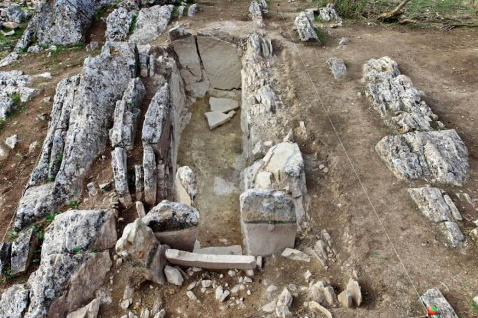

ရှေးဟောင်း သုတေသန ပညာရှင် တွေဟာ နှစ်ပေါင်း ၅,၄၀၀ သက်တမ်းရှိ ရှေးဟောင်း ဂူသင်္ချိုင်း တစ်ခုကို စပိန် နိုင်ငံ တောင်ပိုင်းက တောင်တွေအကြားမှာ ရှာဖွေ တွေ့ရှိ ခဲ့ပါတယ်။
ဒီ သင်္ချိုင်းရဲ့ ထူးခြားချက် ကတော့ သင်္ချိုင်းဂ ဝင်ပေါက်ဟာ နွေရာသီ နွေယဉ်စွန်းချိန် ထွက်ပေါ်လာတဲ့ နေရဲ့ အလင်းတန်းတွေကို ဂူအတွင်းပိုင်းကို ဝင်အောင် တည့်တည့် ဖမ်းယူပေးနိုင်အောင် တည်ဆောက်ထားခြင်းပဲ ဖြစ်ပါတယ်။
ယဉ်စွန်းချိန် (Solstice) ဆိုတာက နေရဲ့ အလင်းရောင် ရရှိချိန်၊ တနည်းအားဖြင့် နေ့တာ အတိုဆုံးနဲ့ အရှည်ဆုံး အချိန်တွေကို ခေါ်တာ ဖြစ်ပါတယ်။ နွေရာသီ နေ့တာအရှည်ဆုံး ရက်ကို နွေယဉ်စွန်းချိန် (summer solstice) လို့ ခေါ်ပြီး ဆောင်းရာသီ နေ့တာ အတိုဆုံး အချိန်ကိုတော့ ဆောင်းယဉ်စွန်းချိန် (winter solstice) လို့ ခေါ်ပါတယ်။
နွေယဉ်စွန်းချိန်ဟာ ကမ္ဘာ့မြောက်ခြမ်းမှာ နှစ်စဉ် ဇွန်လ ၂၀ (သို့) ၂၁ ရက်နေ့တွေမှာ ကျရောက်လေ့ ရှိပါတယ်။ ဒီရက်ဟာ ကမ္ဘာ့မြောက်ခြမ်း အတွက် တစ်နှစ်တာ အတွင်းမှာ နေ့တာ အရှည်ဆုံး ရက်ပဲ ဖြစ်ပါတယ်။
အခု ရှာဖွေတွေ့ရှိတဲ့ ရှေးဟောင်း ဂူသင်္ချိုင်းကို စပိန်နိုင်ငံ တောင်ပိုင်း အန်တီကာရာ ဒေသ (Antequera) မှာ ရှာဖွေ တွေ့ရှိခဲ့တာ ဖြစ်ပါတယ်။ ဒီဒေသဟာ လူလုပ် ရှေးဟောင်း ကျောက်တိုင်တွေ အများအပြား ရှာဖွေ တွေ့ရှိ ထားမှုကြောင့် နာမည် ကျော်ကြားတဲ့ ဒေသ ဖြစ်ပါတယ်။
ပညာရှင် တွေဟာ ဒီ ကျောက်တိုင်တွေကို ဘာ့ကြောင့် ရှေးလူတွေ တည်ဆောက်ခဲ့ ကြသလဲ ဆိုတာကို အဖြေရှာ မရခဲ့ ကြပါဘူး။ ခု ရှာဖွေ တွေ့ရှိတဲ့ ဂူသင်္ချိုင်းဟာ ဒီ ကျောက်တိုင်တွေရဲ့ ရည်ရွယ်ချက်အတွက် သဲလွန်စတွေ ပေးနိုင်လိမ့်မယ်လို့ ပညာရှင်တွေက ယုံကြည် ကြပါတယ်။
အခု သင်္ချိုင်းဂူကို ခရစ်မပေါ်မီ ဘီစီ ၃,၄၀၀ ခန့်က တည်ဆောက်ခဲ့တာ ဖြစ်ပါတယ်။ ဒီ သင်္ချိုင်းဂူရဲ့ ဝင်ပေါက်ဟာ နွေယဉ်စွန်းချိန် နေထွက်တဲ့ အချိန်မှာ ထွက်ပေါ်လာတဲ့ အလင်းရောင်ခြည်တွေ ဂူတွင်း ထဲကို တိုက်ရိုက် ဝင်နိုင်အောင် အတိအကျ ဦးတည်ပြီး တည်ဆောက်ထားပါတယ်။
ဒီလို ဝင်ရောက်လာတဲ့ နေအလင်းရောင်ဟာ ဂူတွင်းက ထွင်းထု အလှဆင် ထားတဲ့ ကျောက်သား နံရံကို တိုက်ရိုက် အလင်းရောင် ထိုးပေးမှာ ဖြစ်ပါတယ်။
ပညာရှင် တွေကတော့ ဒီလို နွေယဉ်စွန်းချိန် ဦးဆုံးထွက်ပေါ်လာတဲ့ နေအလင်းရောင်ကို ဂူတွင်းကို ဖမ်းယူပေးတာဟာ ကိုးကွယ်ယုံကြည်မှု တခုခု (သို့) မှော်ပညာ လမ်းစဉ် တခုခု အတွက် ဖြစ်မယ်လို့ ယူဆ ကြပါတယ်။
ဒီ ဂူ တည်ဆောက်ထားတဲ့ အောက်ခံ ကျောက်သား မျက်နှာပြင်ဟာ နွေယဉ်စွန်းချိန် ထွက်ပေါ်လာတဲ့ နေထွက်ချိန် အလင်းတန်း တွေနဲ့ ဝေးရာကို ဦးလှည့် နေပါတယ်။ ဒါ့ကြောင့် ဂူဆောက်တဲ့ သူတွေဟာ ဝင်ပေါက်ကို နွေယဉ်စွန်း နေထွက်ချိန်နဲ့ တည့်အောင့် တမင်တကာ ဦးလှည့်ပြီး တည်ဆောက်ခဲ့ ကြရပါတယ်။
ပညာရှင် တွေက သူတို့ရဲ့ တွေ့ရှိချက်တွေကို ဧပြီ ၁၄ ရက်နေ့ထုတ် Antiquity ရှေးဟောင်း သုတေသန ဂျာနယ်မှာ တင်ပြ ထားတာ ဖြစ်ပါတယ်။
ဂူဆောက်တဲ့ အင်ဂျင်နီယာ တွေဟာ ကျောက်တုံးတွေ စီတဲ့ နေရာမှာလဲ နွေယဉ်စွန်း နေထွက်ရောင်ခြည်ကို ဖမ်းယူနိုင်ဖို့ သေချာ တွက်ချက်ပြီး စီခဲ့ကြတာ ဖြစ်ပါတယ်။ ဒီကျောက်တုံး တွေကို သင်္ကေတ တွေနဲ့ ထွင်းထုထားပြီး အတိတ်က ဆေးသုတ်ထား ခဲ့ဟန် လက္ခဏာလဲ ရှိပါတယ်။
ဒီ သင်္ချိုင်းဂူ အတွင်းမှာ လူအရိုး အပိုင်းအစ တွေကိုလဲ တူးဖော် ရရှိ ခဲ့ပါတယ်။ သုတေသီ တွေရဲ့ ခန့်မှန်းချက် အရ ဒီ သင်္ချိုင်းဂူမှာ လူ့ရုပ်ကြွင်း မြှုပ်နှံမှုကို နှစ်ပေါင်း ၁,၀၀၀ လောက် ကြာအောင် ပြုလုပ်ခဲ့ ကြတယ်လို့ ယူဆ ကြပါတယ်။
ဒီ ဂူရဲ့ မနီးမဝေးမှာ ထင်ရှားတဲ့ ကျောက်တောင်ကြီး တစ်ခုလဲ ရှိပါတယ်။ ဒဏ္ဍာရီ တွေအလိုအရ တစ်ဦးနဲ့ တစ်ဦး မခွဲနိုင်အောင် ချစ်ကြတဲ့ ချစ်သူနှစ်ဦးဟာ ဒီ ကျောက်တောင်ပေါ်ကနေ ခုန်ချပြီး အဆုံးစီရင် သွားခဲ့ကြတယ်လို့ ဆိုပါတယ်။
အတွင်းက နေရောင် ကျတဲ့ ကျောက်နံရံရဲ့ မျက်နှာပြင်မှာ လှိုင်းတွန့်လေးတွေ အများအပြား ဖြစ်ပေါ် နေပါတယ်။ ဒါဟာ ဘာကို ပြလဲဆိုတော့ ဒီကျောက်တုံးကို ပင်လမ်ကမ်းခြေ တနေရာ ကနေ သယ်ဆောင်လာခဲ့တာ ဆိုတာကိုပဲ ဖြစ်ပါတယ်။
နွေယဉ်စွန်းတန်း နေထွက်လာ ချိန်မှာ နေရောင်ဟာ ဒီ ကျောက်တုံးပေါ် တိုက်ရိုက် ကျရောက်မှာ ဖြစ်ပါတယ်။ ဒီကျောက်တုံးရဲ့ ရှေ့က ကွက်လပ် နေရာမှာတော့ လူ့အရိုး တွေ မရှိပဲ ရှင်းလင်း နေတာကိုလဲ တွေ့ကြ ရပါတယ်။
ဒီလို နေရောင်ထိုးလိုက်တဲ့ အချိန်မှာ ရောင်ပြန်လာတဲ့ အလင်းရောင်ဟာ ဂူအတွင်းမှာ လှိုင်းတွန့်ပုံ ပုံသဏ္ဍန် တွေနဲ့ ကျရောက်မှာ ဖြစ်ပါတယ်။ ဒါဟာ ကိုးကွယ်ယုံကြည်မှု ဆိုင်ရာ အခမ်းအနား (သို့) မှော်အစီအရင် တခုခု အတွက် ရည်ရွယ်ဟန် တူတယ်လို့ ယူဆ ရပါတယ်။
ဒီ ဂူအနီးက ကျောက်တိုင်တွေနဲ့ အလားတူတဲ့ ကျောက်တိုင်တွေကို အာဖရိက မြောက်ပိုင်း မော်ရိုကိုနိုင်ငံကနေပြီး ဆွီဒင် နိုင်ငံအထိ မြေနိုမ့်ပိုင်း တွေမှာ အများအပြား ရှာဖွေ တွေ့ရှိ ထားပါတယ်။ ပညာရှင် တွေကတော့ ဒီအချက်ဟာ ဒီဒေသက လူတွေအကြားမှာ တူညီတဲ့ ကိုးကွယ် ယုံကြည်မှု ရှိတယ်ဆိုတာကို ပြနေတယ်လို့ ဆိုပါတယ်။
မတူညီတာ လေးတွေတော့ အနည်းအကျဉ်း ရှိပါတယ်။ ဒါပေမယ့် အားလုံးမှာ တူညီနေတာ တခုကတော့ ဒီ ကျောက်တိုင်တွေ အားလုံးဟာ နေ ကိုးကွယ်မှု နဲ့ ဆက်စပ်နေတယ် ဆိုတာပဲ ဖြစ်ပါတယ်။
ဒါဟာလဲ သိပ်တော့ မထူးဆန်း ပါဘူး။ဘာ့ကြောင့်ဆို ရှေးခေတ် လူသားတွေရဲ့ ဘဝမှာ နေဟာ အရေးအပါဆုံး ဗဟိုချက် နေရာက ပါဝင် နေတာကြောင့်ပဲ ဖြစ်ပါတယ်။
Ref: 5,400-year-old tomb discovered in Spain perfectly captures the summer solstice | LiveScience
နွေယဉ်စွန်း နေအလင်းကို ဖမ်းယူသည့် နှစ် ၅,၄၀၀ သက်တမ်းရှိ ဂူသင်္ချိုင်း စပိန်တွင် ရှာဖွေတွေ့ရှိ

May 25, 2023
Other Posts
- ကလေးကကိုယ်လိုချင်တာမရလို့ ဝုန်းဒိုင်းကြဲ ပေါက်ကွဲရင် ဘယ်လိုဖြေရှင်းမလဲ
- အပြည်ပြည်ဆိုင်ရာ အာကာသစခန်းမှ ယာဉ်မှူးများ ကယ်ဆယ်ရေး နာဆာနှင့် SpaceX ဆွေးနွေး
- Valentine Day ရဲ့ သမိုင်းအမှန်
- ကားတာယာနဲ့ ပါတ်သက်ပြီး သိသင့်သမျှ
- မစ်ကီးဝေးရဲ့ ဗဟိုကိုကာရံထားတဲ့ ကိုယ်ပျောက်တံတိုင်းကြီး
- Phonics ဖိုးနစ်နည်းနဲ့ အင်္ဂလိပ်စာ သင်မယ်
- DART Mission ဘယ်လောက် အောင်မြင်သလဲ
- အီဂျစ် မံမီ ရုပ်ကြွင်း ၂၅၀ ရှာဖွေတွေ့ရှိ
- လေယာဉ် ဘယ်လိုလေထဲ ပျံသလဲ
- မစ်ကီးဝေး ဂလက်စီ ထဲက အကြီးဆုံးကြယ်